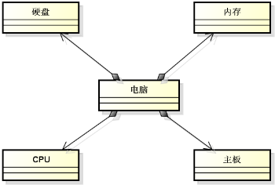
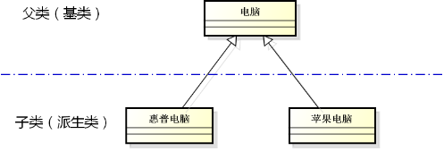

1，继承在面向对象中具有举足轻重的地位，面向对象当中的很多高级技术都和继承是息息相关的，比如面向对象的高端课程《设计模式》中的每一种技术都和继承有关，因此我们非常有必要在学习 C++ 时，把继承好好的掌握；通过生活中的例子，来入手面向对象中的概念，绝对是一个很好的选择，因为面向对象理 论起源于生活；
2，生活中的继承是一种关系，发生在两个实体之间，最直接的例子是儿子继承了父亲的一切东西，包括长相、性格，龙生龙指的是特征的继承，这说明了日常生活中继承包含的第一个层面的意思就是特征上面的获取，老鼠儿子会打洞指的是行为的继承，这说明了日常生活中继承包含的第二个层面的意思就是行为上面的获取；综上所述，生活中的继承指的是特征和行为的获取；
3，面向对象中的继承类推生活中的继承也应该是一种关系；
4，思考：
1，类之间是否存在直接的关联关系？
1，面向对象中的实体只有类和对象，对象是用类来创建的，所以我们有必要考虑类之间是否有关联关系，如果类之间没有关联关系，则类的继承无从谈起；
5，组合关系：整体与部分的关系：

6，组合关系的描述实例分析：
1，代码示例：
1 #include <iostream>
2 #include <string>
3
4 using namespace std;
5
6 class Memory
7 {
8 public:
9 Memory()
10 {
11 cout << "Memory()" << endl;
12 }
13 ~Memory()
14 {
15 cout << "~Memory()" << endl;
16 }
17 };
18
19 class Disk
20 {
21 public:
22 Disk()
23 {
24 cout << "Disk()" << endl;
25 }
26 ~Disk()
27 {
28 cout << "~Disk()" << endl;
29 }
30 };
31
32 class CPU
33 {
34 public:
35 CPU()
36 {
37 cout << "CPU()" << endl;
38 }
39 ~CPU()
40 {
41 cout << "~CPU()" << endl;
42 }
43 };
44
45 class MainBoard
46 {
47 public:
48 MainBoard()
49 {
50 cout << "MainBoard()" << endl;
51 }
52 ~MainBoard()
53 {
54 cout << "~MainBoard()" << endl;
55 }
56 };
57
58 class Computer // 这个地方不仅描述了事物，也还描述了关系，里面只要有一个类不存在，电脑这个类也就不复存在了；
59 {
60 Memory mMem;
61 Disk mDisk;
62 CPU mCPU;
63 MainBoard mMainBoard;
64 public:
65 Computer() // 这里会先调用类成员的构造函数，之后调用电脑类的构造函数，这说明了组合关系；电脑类对象的创建，要依赖上述四个类的对象的创建；
66 {
67 cout << "Computer()" << endl;
68 }
69 void power()
70 {
71 cout << "power()" << endl;
72 }
73 void reset()
74 {
75 cout << "reset()" << endl;
76 }
77 ~Computer() // 电脑类析构的时候，也会将对应的类成员析构，这说明同生死；说明了电脑类对象的存在完全依赖于类成员对象的存在；
78 {
79 cout << "~Computer()" << endl;
80 }
81 };
82
83 int main()
84 {
85 Computer c;
86
87 return 0;
88 }1，这里各个类没有实现具体的功能，但是这里主要是用类描述了一种生活当中 整体和部分的关系；
2，面向对象的强大主要在于它直接的描述生活里面的例子，不需要建模了，生活当中什么样子，程序就是什么样子，这样很容易帮助我们开发者找到一种解决方案，面向对象程序设计理论简化了我们当今的软件开发，就目前而言的话，几乎所有的大型软件都是通过面向对象的这门理论支撑而开发的得到的，虽然说有些软件是用 C 语言写的，但是这门理论依然支撑着整个软件的生命期，所以说学习 C++ 不仅仅是学习语法，还要学习面向对象的编程思想，这个例子很好的表现了这一点；
3，这个例子向我们展示了如何用代码展示组合关系，虽然这个代码简单，但是后面的项目当中会经常使用这个技术；
7，组合关系的特点：
1，将其它类的对象作为当前类的成员使用；‘
1，成员变量升级了，成员变量不再是基本类型的变量，成员变量升级为其它类的对象；
2，但是这样的话，类成员的成员变量和成员函数是一个什么样的存储状态，这个还有待深刻研究；
2，成员对象的生命周期与当前类的对象相同；
1，整体与部分的关系，如果部分出了问题，整体也一定出了问题，如车的车轮、电脑的内存；
3，成员对象在用法上与普通对象完全一致；
1，组合关系是面向对象理论当中最简单的一种关系；
8，分析继承关系前分析组合关系的原因：
1，类之间的两种关系为组合和继承，先讲组合是想论述类之间是真的可以存在关系的，存在了组合关系，也就可以存在继承关系；
2，讲组合关系也是因为在实际的软件开发过程当中，发现很多开发者不会正确的使用继承，往往该用组合关系的地方，他们用的是继承关系，而组合关系对应的是最简单的类之间的关系，也就对应着最简单的代码，我们的整个软件本来就已经很复杂了，我们能简单就简单些，如果能简单的地方弄复杂了，否则一堆的 bug 等着我们；
3，所以我们要先讲组合关系，再讲继承关系，就想告诉大家，在实际的工程开发里面，我们进行设计的时候，先考虑组合关系，看下组合关系能不能满足我们的需求、能不能描述我们实际的问题，如果可以就用组合关系，因为组合简单，如果不可以用组合关系，则应该看看我们当前面临的问题需要用继承来解决，因为继承肯定的比继承复杂的多的多，不是一个数量级的，这就是为什么先讲组合关系；
9，继承关系：父子关系：

1，简单的说继承关系就是父子关系；
2，惠普电脑是一种特殊电脑，苹果电脑也是一种特殊的电脑；惠普电脑是电脑的一个特化实例，可以说惠普电脑是一种电脑，但绝对不能说电脑是一种惠普电脑（这里赋值兼容性体现出来了，子类对象可以当做父类对象使用，父类对象不可以当做子类对象使用，子类就是一种特殊的父类），这是生活中的常识；
3，当两个概念之间存在这种特化关系时，其实已经发生了继承关系；惠普电脑一定会有电脑的所有特征（子类拥有父类的所有属性和行为），但是电脑不一定有惠普电脑的特征（子类可以添加父类没有的方法和属性，也可以重写父类的成员函数），因为这种关系是单向的，继承关系必然有一个角色叫做父类，另一个角色叫做子类，子类继承了父类的一切特征；
10，面向对象中的继承：
1，面向对象中的继承和生活中的继承是相似的，也是指的父子关系；
2，这种父子关系是发生在类之间，发生在类之间的父子关系很明显的就说明了有一个类是父类，而另一个类是子类；
11，面向对象中的继承指类之间的父子关系：
1，子类拥有父类的所有属性和行为；
1，惠普电脑肯定有父类的所有属性，比如内存、硬盘、CPU、主板，行为包括开机；
2，子类就是一种特殊的父类；
1，惠普电脑是一种电脑；
1，“特殊的”寓意着除了父类的特性外还有自身的特性；
3，子类对象可以当作父类对象使用；
1，我工作需要一台电脑，这里的需要的是一个父类的对象，然而我们真正提供的惠普电脑是一个子类的对象；
2，惠普电脑可以工作，这就是说明了子类对象是可以当做父类对象使用的；
3，这是很重要的一个技术，面向对象里面的很多技术都与这个技术息息相关；
4，子类中可以添加父类没有的方法和属性；
1，儿子要比父亲强大，长江后浪推前浪；
12，C++ 中通过下面的方式描述继承关系：
1，代码示例：
1 class Parent
2 {
3 int mv;
4
5 public:
6 void method();
7 };
8
9 class Child : public Parent // 描述继承关系；冒号代表了继承，继承自 Parent 类；
10 {
11 // ...
12 };
13，继承初体验编程实验：
1 #include <iostream>
2 #include <string>
3
4 using namespace std;
5
6 class Parent
7 {
8 int mv;
9 public:
10 Parent()
11 {
12 cout << "Parent()" << endl;
13 mv = 100;
14 }
15 void method()
16 {
17 cout << "mv = " << mv << endl;
18 }
19 };
20
21 class Child : public Parent
22 {
23 public:
24 void hello()
25 {
26 cout << "I'm Child calss!" << endl;
27 }
28 };
29
30 int main()
31 {
32 Child c;
33
34 Parent p1 = c; // 子类对象可以当做父类对象使用；
35 Parent p2;
36
37 p2 = c; // 子类对象可以当做父类对象使用；
38
39 c.hello();
40 c.method(); // mv = 100；
41
42 return 0;
43 }1，子类中继承了父类的成员函数，包括构造函数，意味着子类创建的时候，会调用父类的构造函数，以继承父类中属性的状态；
2，想要使用一个已经存在的类的时候，我们不用复制粘贴它的代码，可以继承得到已有类的代码，并且还可以添加新的成员；
3，继承的深层次意义就是代码复用；
14，继承重要规则：
1，子类就是一个特殊的父类；
1，子类拥有父类的所有特性，所以是父类，子类可以自己添加新的特性，所以特殊；
2，子类对象可以直接初始化父类对象；
1，因为子类是一个特殊的父类；
3，子类对象可以直接赋值给父类对象；
15，继承的意义：
1，继承是 C++ 中代码复用的重要手段。通过继承，可以获得父类的所有功能，并且可以在子类中重写已有功能，或者添加新功能；
16，继承的强化练习编程实验：
1 #include <iostream>
2 #include <string>
3
4 using namespace std;
5
6 class Memory
7 {
8 public:
9 Memory()
10 {
11 cout << "Memory()" << endl;
12 }
13 ~Memory()
14 {
15 cout << "~Memory()" << endl;
16 }
17 };
18
19 class Disk
20 {
21 public:
22 Disk()
23 {
24 cout << "Disk()" << endl;
25 }
26 ~Disk()
27 {
28 cout << "~Disk()" << endl;
29 }
30 };
31
32 class CPU
33 {
34 public:
35 CPU()
36 {
37 cout << "CPU()" << endl;
38 }
39 ~CPU()
40 {
41 cout << "~CPU()" << endl;
42 }
43 };
44
45 class MainBoard
46 {
47 public:
48 MainBoard()
49 {
50 cout << "MainBoard()" << endl;
51 }
52 ~MainBoard()
53 {
54 cout << "~MainBoard()" << endl;
55 }
56 };
57
58 class Computer
59 {
60 Memory mMem;
61 Disk mDisk;
62 CPU mCPU;
63 MainBoard mMainBoard;
64 public:
65 Computer()
66 {
67 cout << "Computer()" << endl;
68 }
69 void power()
70 {
71 cout << "power()" << endl;
72 }
73 void reset()
74 {
75 cout << "reset()" << endl;
76 }
77 ~Computer()
78 {
79 cout << "~Computer()" << endl;
80 }
81 };
82
83 class HPBook : public Computer // 要继承
84 {
85 string mOS;
86 public:
87 HPBook() // 先调用父类的类成员构造函数，再调用父类的构造函数，再调用自身的构造函数；
88 {
89 mOS = "Windows 8"; // 出厂预装的 Windouw 8；
90 }
91
92 void install(string os) // 添加新功能，安装操作系统
93 {
94 mOS = os;
95 }
96
97 void OS() // 添加新功能，查看安装的系统
98 {
99 cout << mOS << endl;
100 }
101 };
102
103 class MacBook : public Computer // 要继承
104 {
105 public:
106 void OS()
107 {
108 cout << "Mac OS" << endl;
109 }
110 };
111
112 int main()
113 {
114 HPBook hp;
115
116 hp.power();
117 hp.install("Ubuntu 16.04 LTS");
118 hp.OS();
119
120 cout << endl;
121
122 MacBook mac;
123
124 mac.OS();
125
126 return 0;
127 }
17，小结：
1，继承是面向对象中类之间的一种关系；
2，子类拥有父类的所有属性和行为；
3，子类对象可以当作父类对象使用；
4，子类中可以添加父类没有的方法和属性；
5，继承是面向对象中代码复用的重要手段；